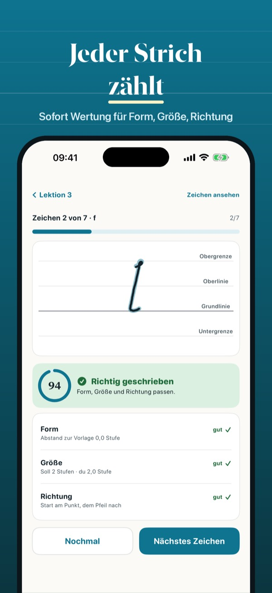
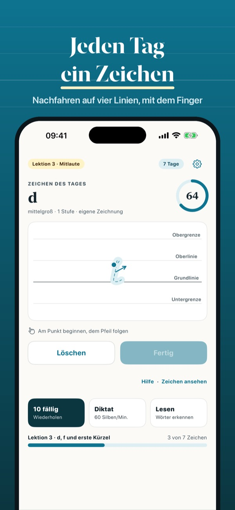
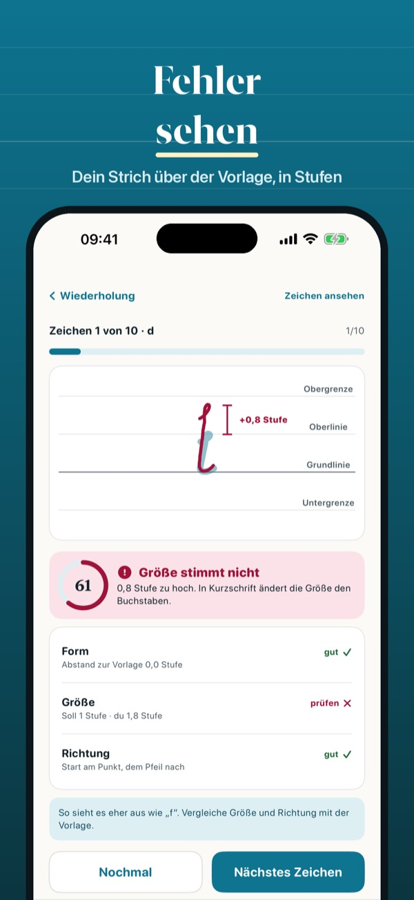

Stenografie Strich für Strich
Bald im App Store



Kürzel bringt dir die Verkehrsschrift der Deutschen Einheitskurzschrift bei. Du fährst jedes Zeichen mit dem Finger auf vier Linien nach und bekommst sofort eine Wertung: Passt die Form, stimmt die Höhe in Stufen, ist die Richtung richtig? Danach baust du Wörter, liest Kurzschrift und schreibst nach Diktat in deinem Tempo. Alle Zeichen sind eigene Zeichnungen nach den Regeln der Systemurkunde von 1968.
Die ersten 5 Lektionen mit Nachfahren und Wertung gehen ohne Kauf. Kürzel Plus ist ein Einmalkauf: alle Lektionen, Zeichen und Kürzel, alle Wörter, das ganze Diktat, Statistik und Wiederholung. Kein Abo.
Kürzel enthält eigene Zeichnungen nach den Regeln der Deutschen Einheitskurzschrift und steht in keiner Verbindung zu Verbänden oder Verlagen. Ein Kurs im Stenografenverein lässt sich damit gut ergänzen.